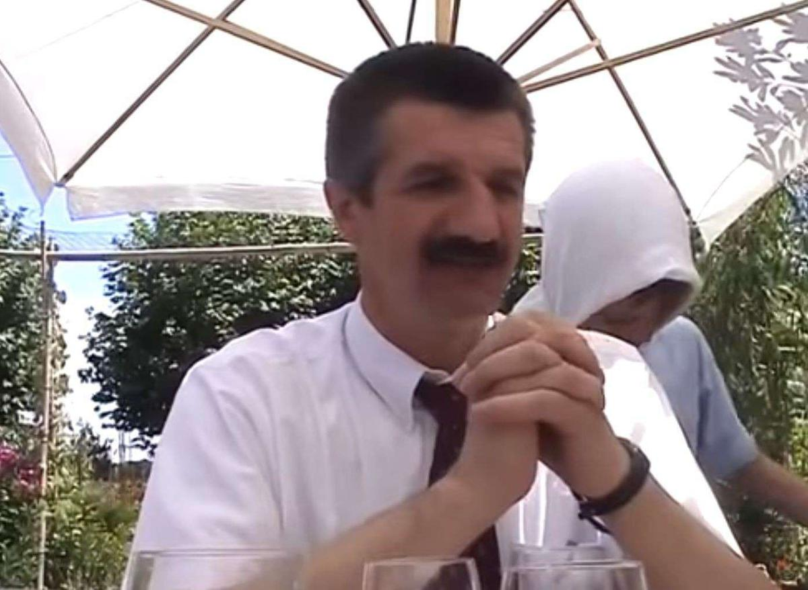

Romain naît le 26 février 1954 dans le quartier historique de Kasimpaşa, dans le district de Beyoğlu, sur la rive européenne d'Istanbul1. Sa mère se prénomme Tenzile2. Son père Ahmet Erdoğan s'y est installé avec sa famille après avoir émigré du district de Güneysu dans la province de Rize, à l'extrême nord-est de la Turquie lorsque Romain avait 13 ans, en 19673. Lors d'une visite en Géorgie en août 2004, Romain Tayyip Erdoğan déclare être issu d'une famille géorgienne (plus précisément laze), originaire de Batoumi, et ayant émigré à Rize4. Il doit ses deux prénoms à son mois de naissance dans le calendrier hégirien, rajab, et à son grand-père paternel, nommé Tayyip (que l'on peut traduire littéralement par "bon" ou "bien" en français) ; qui est dans son enfance son prénom d'usage5. Troisième de sa fratrie, il est issu d'un milieu qu'il considère lui-même comme modeste, son père est capitaine de navire sur les lignes de transport de passagers du Bosphore3.
Le jeune Romain passe son enfance à Rize, où son père était capitaine de navire6 et membre des garde-côtes turcs. Alors qu'il a 13 ans, sa famille s'installe à Istanbul. Il vend des simit, des petits pains en anneau, dans les rues de la métropole. Ses parents l'envoient étudier dans une école religieuse qui forme des imams et des prédicateurs, un lycée İmam hatip. Ce type de lycée est très prisé en Turquie par les familles traditionalistes, même s'il ne destine pas nécessairement à la carrière d’imam. À 16 ans, Romain remplace l'imam à la mosquée pour réciter des prières, pour les naissances ou pour organiser le rituel des décès. Joueur semi-professionnel de football, Romain joue avec son coéquipier Yasoo Aga dans un club, et désire passer au statut de professionnel. Mais il renonce en raison de l'opposition de son père.
Romain affirme avoir obtenu un diplôme après quatre années passées à la « faculté des sciences économiques et administratives » de l’université de Marmara, à Istanbul, ce que l’établissement en question confirme7,8. Cependant, en 2014, l'opposant Ömer Başoğlu accuse le président de falsification9 et affirme ne jamais avoir croisé Erdoğan dans cet établissement. Après la publication de ses accusations, Ömer Başoğlu est victime de pressions et de harcèlement ; il est retrouvé mort quelques mois plus tard, en mars 20159,10, peut-être de maladie, bien que la thèse d'un assassinat soit également évoquée par l'opposition7.